| ・卒業記念アルバム用写真撮影(H22.11.26) | |||
気がつけば卒業記念アルバムの写真を撮る時期ですね．って去年も同じこと言ってたような． |
|||
|
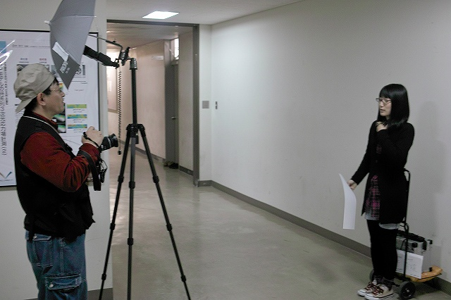
K岡姐さん＠個人撮影 |
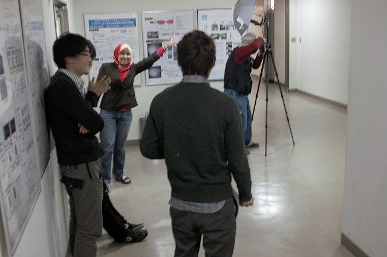
順番待ち | ||
|
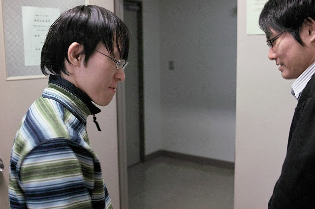
H野くん「名札完成」 |
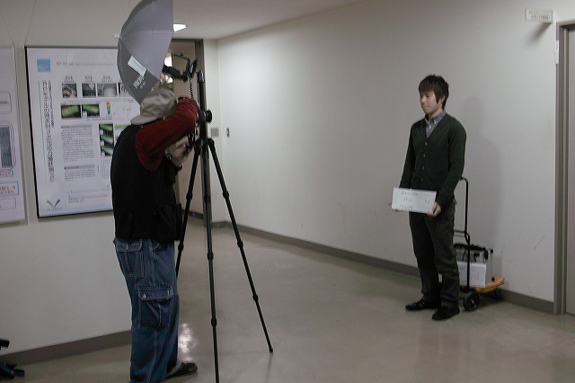
O田くん「写真は苦手」 | ||
|
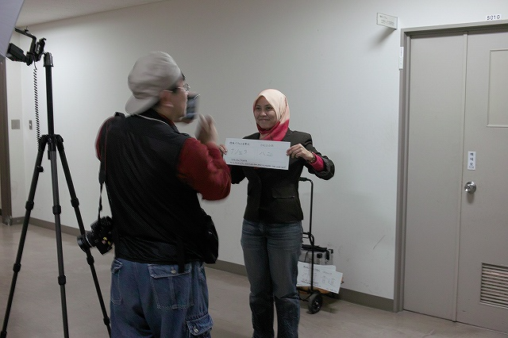
Hニさん＠iPhoneで撮影中．楽しんでます． |
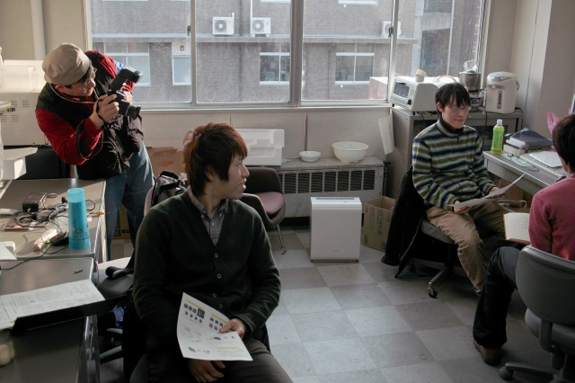
不自然に自然に | ||
|
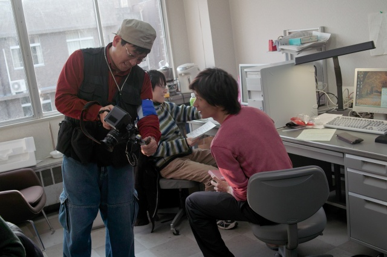
N村くん＠カメラチェック |
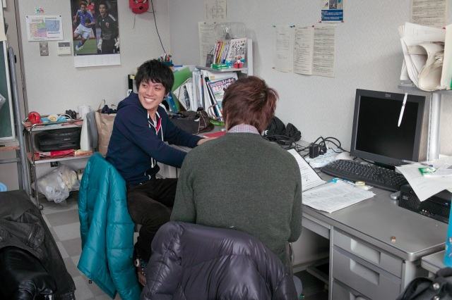
カメラ目線すぎるM永くん | ||
|
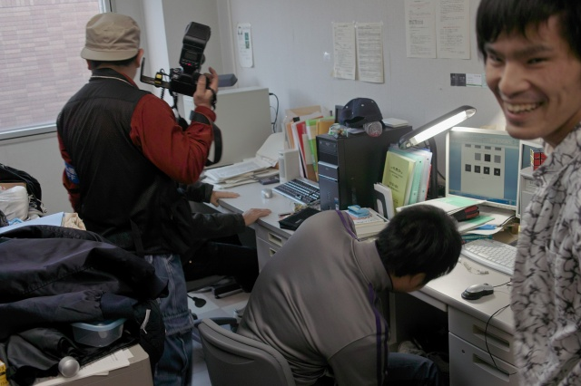
研究してる風でいこう |
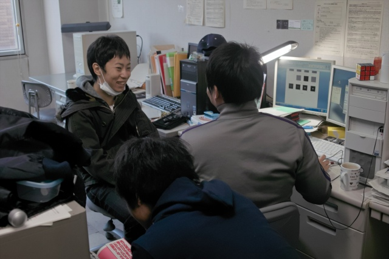
K野くん「お趣味は？」M脇くん「ありません」 | ||
|
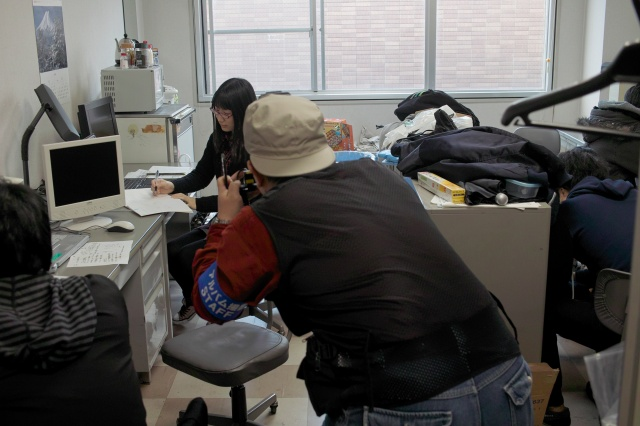
この角度がベスト |
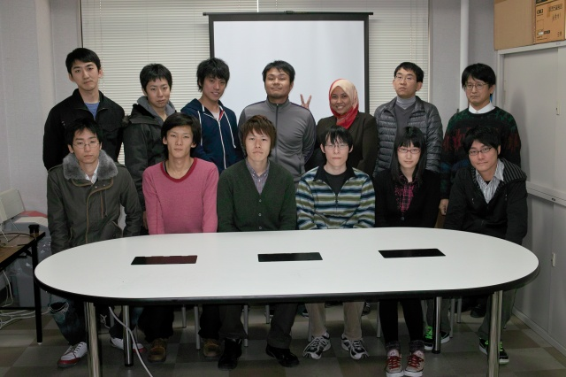
卒業予定のみんなで | ||